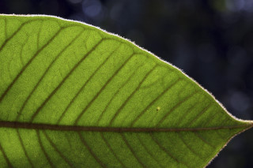
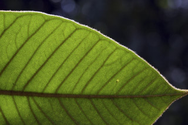

| Habit : | Trees up to 25 m tall, aerial roots numerous , arising in tufts from the stout branches . |
| Leaves : | Leaves simple , alternate , spiral ; stipules 1 cm long, pubescent , caducous leaving annular scar ; petiole to 1.5-3.5 cm long, planoconvex in cross section, pubescent ; lamina 10-22 x 6-15 cm, broadly elliptic-oblong or ovate , apex acute or acuminate , base rounded or subcordate , margin entire , brown pubescent beneath when young, later glabrescent ; midrib raised above; secondary_nerves 8-12 pairs, prominent; tertiary_nerves broadly reticulate . |
| Inflorescence / Flower : | Inflorescence syconia, axillary , solitary , subglobose , sessile , brown pubescent ; flowers unisexual . |
| Fruit and Seed : | Syconium, sessile , oblong or obovate , ca. 2.5 cm long, orange yellow when ripe, pubescent ; achene smooth. |


 
